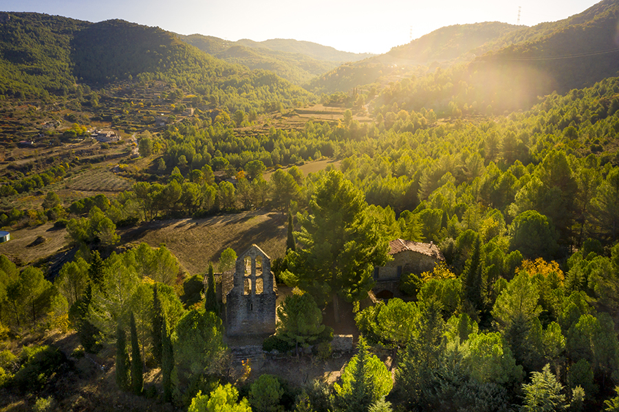
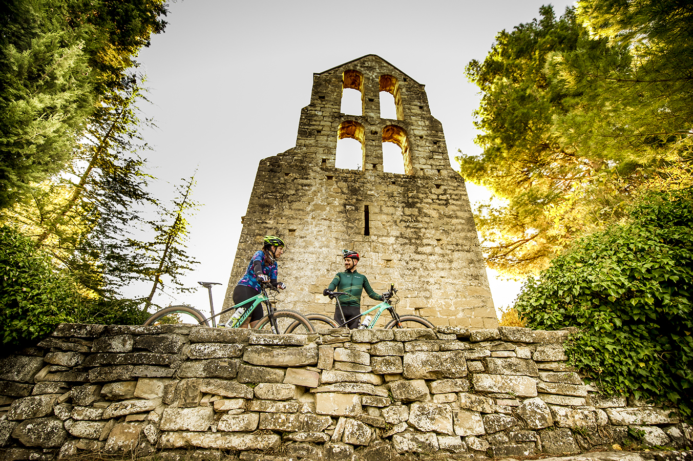
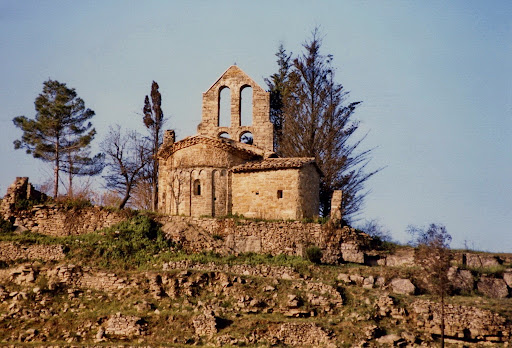
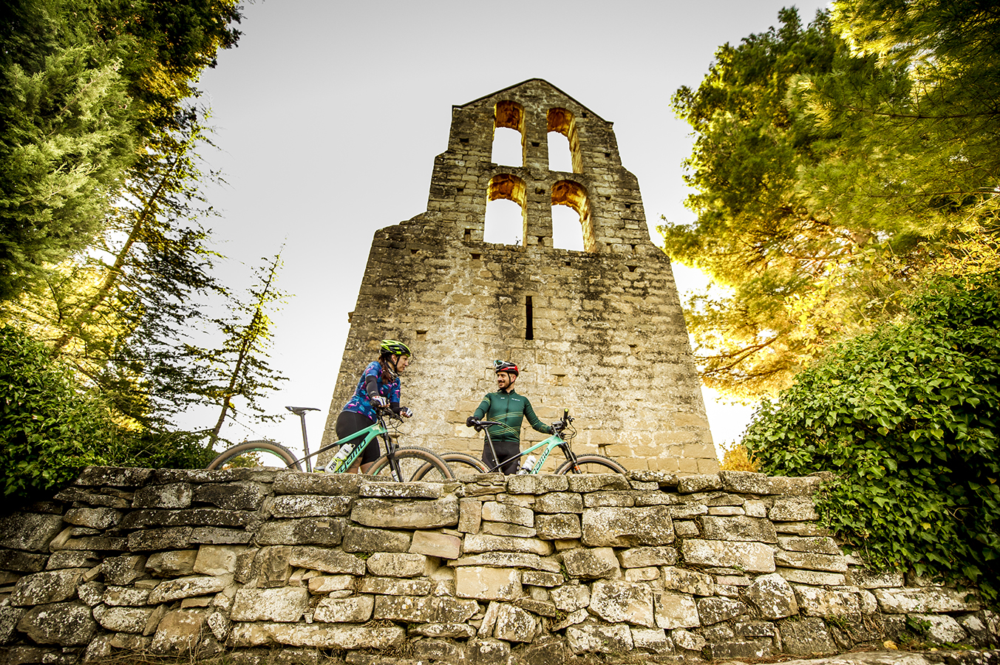
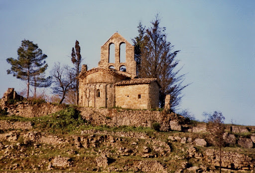
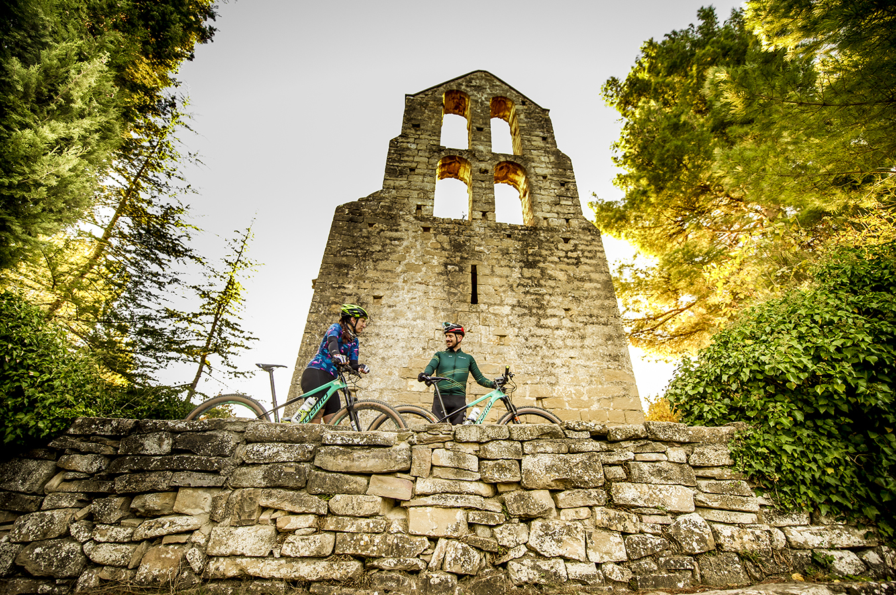
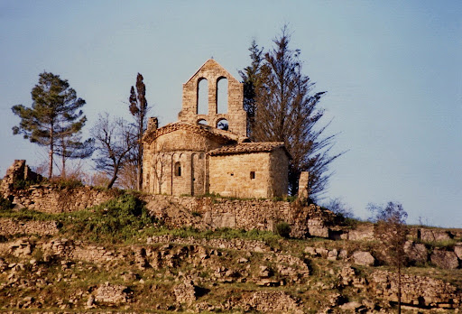
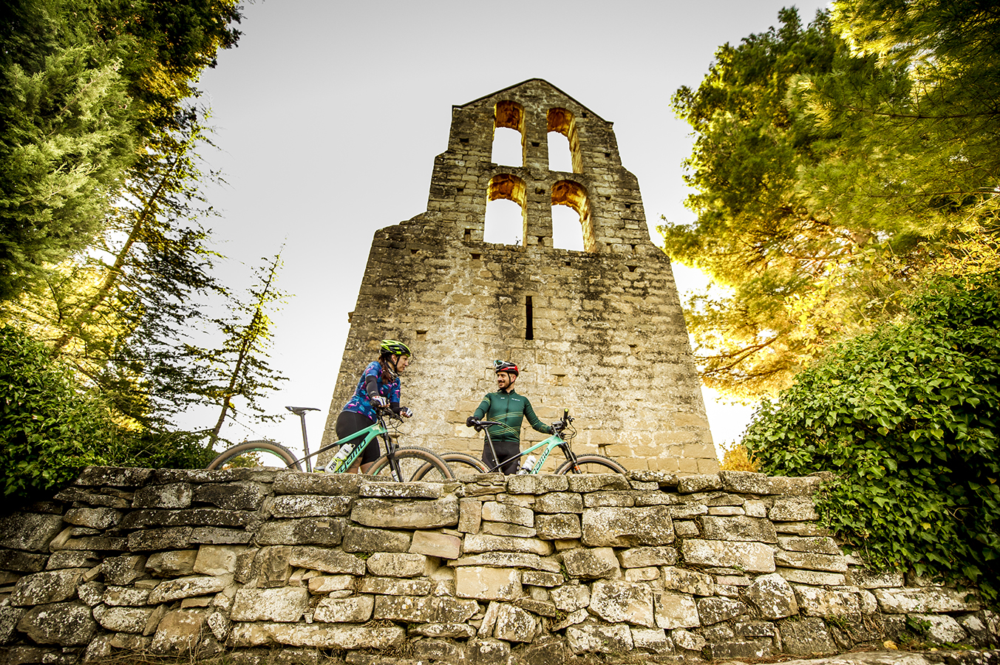
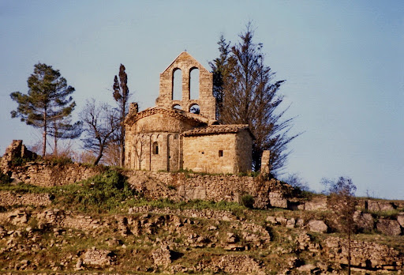

Gallery

 





Sant Pere de Vallhonesta és una església romànica del municipi de Sant Vicenç de Castellet, a la comarca del Bages. Està situada a la banda de llevant del municipi, al vessant meridional de la vall del torrent de Rubió. Exercia les funcions parroquials de l'antic terme de Vallhonesta.

